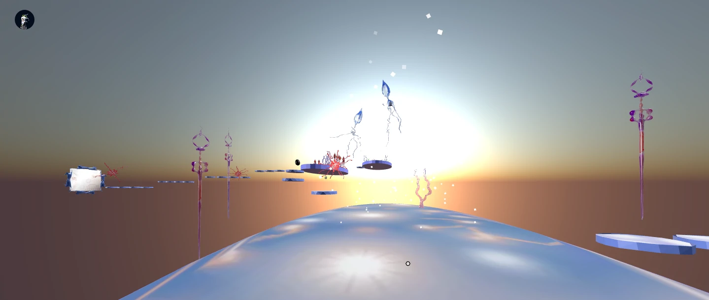
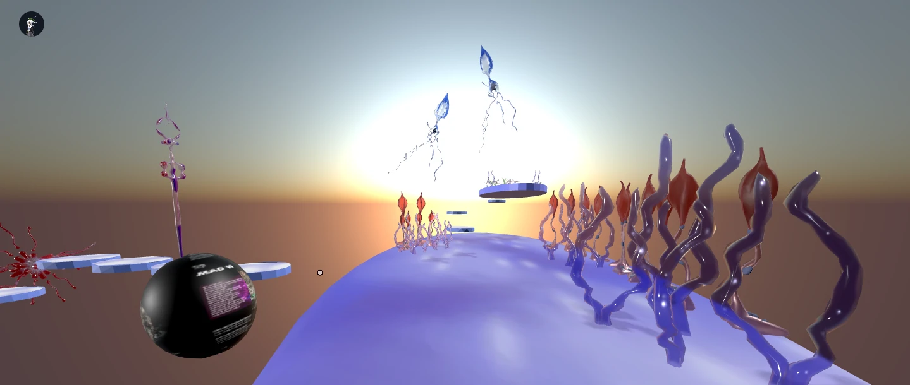
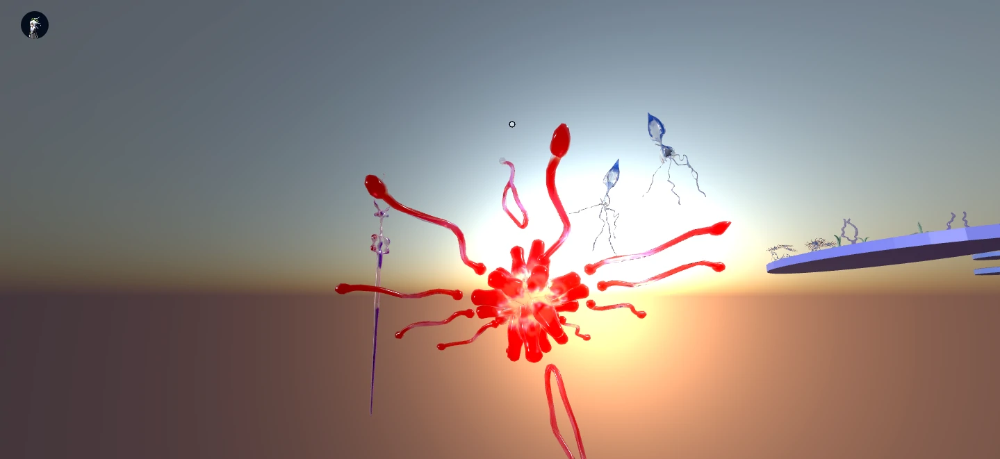
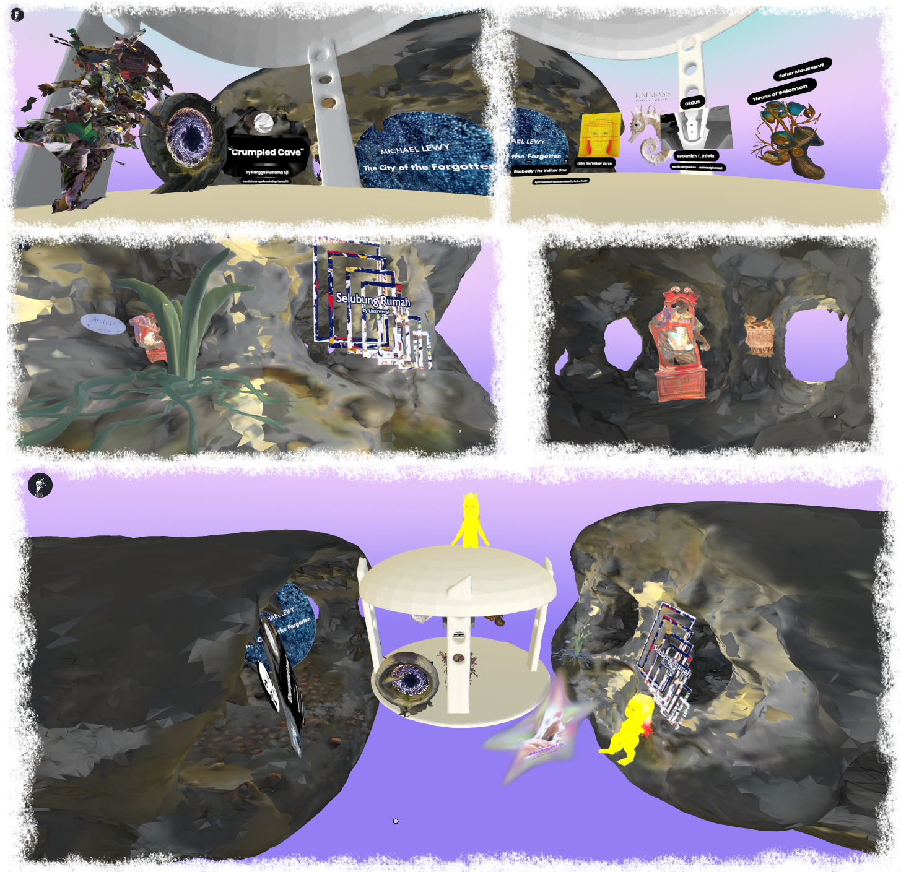
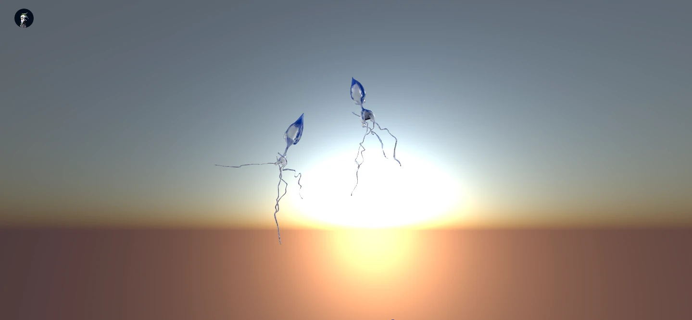

𖥧 Apwhix 𖥧
"𖥧 Apwhix 𖥧" registro audiovisual, 2025

𖥧 apwhix 𖥧 es una obra audiovisual-espacial creada específicamente para "Mad World", la exhibición colectiva que resultó de la residencia artística Loop Art Critique, cohorte #19 ▒▒▒dreamRAM▒▒▒::newfangled, curada por Joey Zaza que duró tres meses. La muestra se presentó de forma online en el metaverso digital, y de manera física en colaboración con MUD Foundation en O Cinema, Miami.
La especie tiene una forma peculiar que parece flotar en el aire, como si su tallo se hubiese desmaterializado. Crece enredada en las alturas de los árboles, anclada a ellos como una red suspendida.

en las últimas horas de la tarde, cuando la luz del sol se filtra entre las nubes, las especies finalmente emergen. como despertando de un sueño milenario y silencioso, flotan a través del espacio, observando las hojas suaves, el viento quieto, y los pensamientos profundos entre la vida nítida y eterna de nosotros: especies que danzan ✹ 𓂃｡┈┈｡𓂃 en palabras de ▒▒▒dreamRAM▒▒▒ newfangled verses: "¿qué construís cuando todo está fallando? Este mundo es ejecutable". ෴.෴𑁯𖤣୭෴.෴

Sobre la muestra: “Mad World parte de la visión que propone la canción sobre la repetición, la soledad y la belleza frágil, el ciclo de rostros, lugares y gestos que se repiten hasta convertirse en mito. Inspirada en Donnie Darko y en la atmósfera de "Mad World", la muestra conecta nuestras obras a través de la memoria, la dislocación y la búsqueda de sentido en un mundo que no deja de volver sobre sí mismo. La exhibición comienza en una caverna, el primer cine, donde la luz titilante convierte las imágenes fijas en movimiento. Como en los primeros experimentos cinematográficos, donde la emoción cambiaba según el contexto, cada pieza se transforma en relación con las demás.”

La exhibición se inauguró el 5 de diciembre de 2025 y aún se puede ingresar mediante este link.

link al sitio web de Loop Art Critique: https://loop.onland.io/
← atrás ←